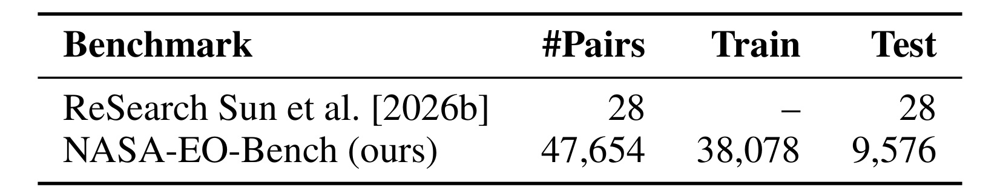
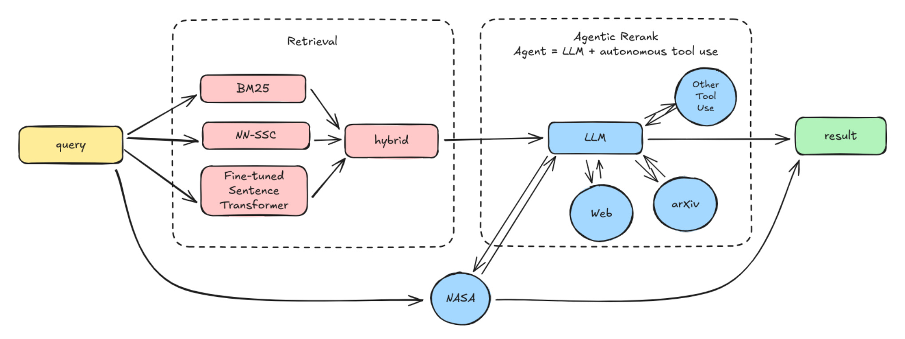
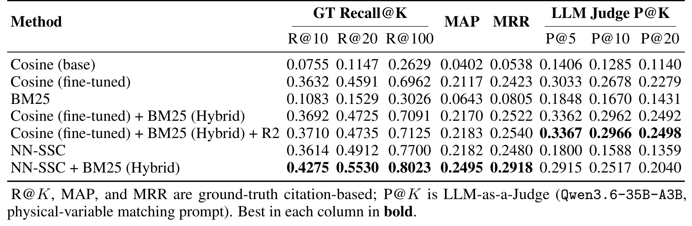
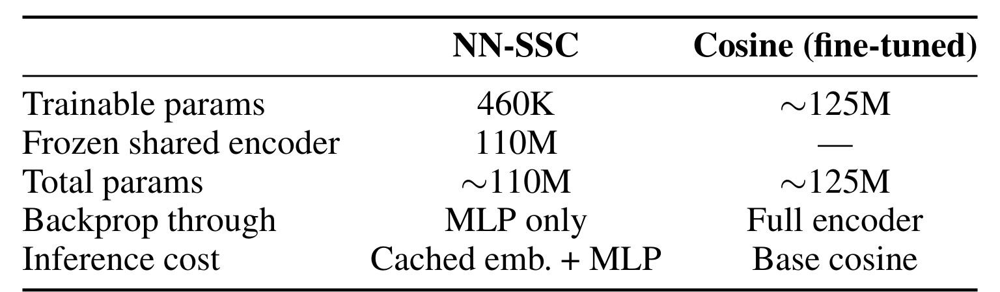
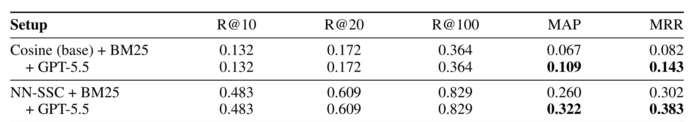
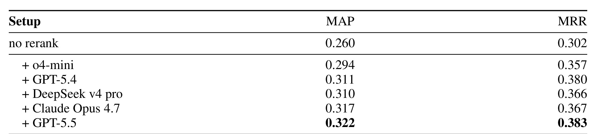
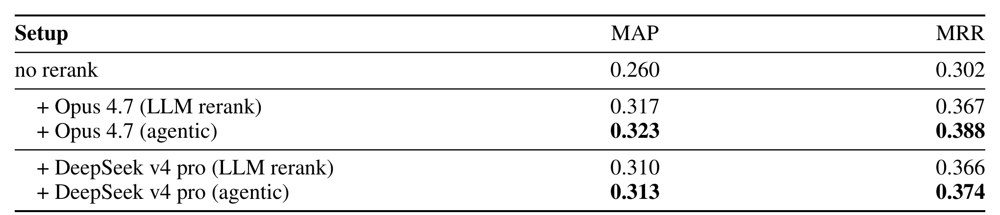

UMD-AgenticSearchEO：Bringing Agentic Search to Earth Observation Data Discovery
[toc]
这篇论文来自 University of Maryland, College Park 与 University of Florida，讨论的不是通用网页搜索，而是地球观测数据发现里的“研究问题到可用数据集”匹配。论文入口为 arXiv:2607.02387。PDF 首页列出 NASA Worldview、Giovanni、Science Discovery Engine、Harmony 等官方服务入口，本轮没有核验到独立代码仓库；但论文明确给出了 NASA-EO-Bench 的数据来源和训练、评测协议，因此更像一篇“数据发现基准 + 混合检索 + Agentic 重排”的系统论文。
NASA 和相关数据中心已经积累了大量地球科学数据集与工具，但真正困难的不是缺数据，而是研究者要在分散的元数据、工具入口和访问路径之间找到与自己自然语言研究问题匹配的数据；即使领域专家也会被这种碎片化入口和候选排序误差拖慢。
1. 背景和问题
地球观测数据发现很像推荐系统里的候选发现问题：用户不是输入一个完全结构化的物品编号，而是用自然语言描述一个研究目标，比如某个区域、某段时间、某种气象或水文变量，系统需要把它映射到 NASA CMR 里的真实数据集、产品短名、仪器、任务名和工具入口。论文把问题限定在 ranking layer，而不是端到端问答：系统要先找到可能相关的数据集，再把最合适的结果排到前面。这个限定很重要，因为它让“Agentic Search”不再只是一个宽泛口号，而是一个可测的检索和重排任务。
论文指出，NASA 生态里有 Worldview、Giovanni、Science Discovery Engine、Harmony 等成熟工具，也有大量 Distributed Active Archive Centers 和 Common Metadata Repository 数据记录。问题在于这些入口各自服务不同任务：有的适合可视化，有的适合子集化与数据访问，有的适合知识背景查询；研究者的自然语言需求往往同时包含变量、时空范围、仪器线索和科学目标。直接让通用 LLM 回答会遇到两层风险：预训练语料缺少足够的地球科学观测知识，模型容易把相近术语误解为同一数据需求；即便加上 RAG，上下文窗口也只能塞入少量候选，越靠后的候选越难影响最终答案。因此真正的瓶颈是候选排序质量，而不是“有没有把所有材料塞给模型”。
作者选择从 NASA Earth Observation Knowledge Graph 里抽取 USES DATASET 关系，把论文实际引用过的数据集当成 silver labels。这种构造没有声称覆盖所有可用数据集，而是把“科研论文确实用过哪些数据产品”变成可重复的训练和评测信号。它的价值在于可追溯：查询来自论文摘要改写，正例来自知识图谱中的论文到数据集引用边，候选数据集来自 NASA CMR 记录。这样得到的 NASA-EO-Bench 可以支持监督训练、离线指标和后续系统对比，而不是只靠几个展示案例说明 agent 看起来会搜索。

Table 1 把这件事讲得很直接：前序 ReSearch 基准只有 28 个 query-dataset pairs，无法稳定比较 MAP、MRR 这类排序指标，也不适合训练一个监督检索器；NASA-EO-Bench 则扩展到 47,654 对，并拆成 38,078 对训练、9,576 对测试。这里的关键不是“数字更大”本身，而是任务从小样例演示进入了可以训练、可以留出测试集、可以对不同 retrieval backbone 和 reranker 做横向比较的规模。对推荐系统读者来说，这相当于从几条人工 case study 变成一个有曝光候选、正例集合、训练集和测试集的离线排序任务；对 LLM agent 读者来说，它把 agentic search 的收益绑定到 MAP、MRR、Recall@K，而不是绑定到主观的回答流畅度。
这篇论文和传统知识图谱检索的区别也值得强调。它不是在运行时让 agent 查 NASA EO-KG 图数据库，也不是把 KG 作为每次推理的实时基础设施；KG 只在离线构造 benchmark 时提供 citation-grounded labels。运行时检索阶段直接面向数据集文本字段和 BM25、embedding 分数，agentic 阶段调用外部 web 与 arXiv 工具来消除候选歧义。这个分工使方法更接近“搜索推荐系统 + LLM 重排器”：知识图谱负责产生可信训练信号，线上排序链路仍然是可替换的检索、融合和重排模块。
从推荐算法角度看，论文最有参考价值的地方有三点。第一，它把数据集发现转成多正例检索任务，评价中同时看召回上限和首个相关结果的位置。第二，它承认 citation-based label 天然偏召回、偏主流数据产品，所以额外用 LLM-as-a-Judge Precision@K 作为语义精度诊断。第三，它把 Agentic Search 放在 rerank stage，而不是让 agent 从头做全量召回；这样成本和风险都被限制在 top-K 窗口内。这个设定比“让大模型自己搜全网”更接近可落地的推荐/搜索生产链路。
2. 方法
2.1 从 NASA EO-KG 到 NASA-EO-Bench
NASA-EO-Bench 的构造从 NASA GES DISC 相关论文和 NASA EO-KG 开始。作者选取 citation count 较高的 10,636 篇 publication，每篇论文的摘要被交给 LLM 生成两个 “I want to ...” 风格的任务型查询，目标是模拟未来用户会怎样自然描述自己的地球科学数据需求。正例不是 LLM 猜出来的，而是来自 EO-KG 里 publication 到 CMR dataset 的 USES DATASET 边。最终保留有非空正例的数据，得到 21,272 个 task-based queries、47,654 个 query-dataset pairs，平均每个 query 有 2.24 个引用数据集，数据集语料覆盖 8,058 条 NASA CMR 记录。
这个构造解决的是监督信号来源问题。手写查询太少，纯关键词查询又不像真实科研意图；如果让 LLM 同时生成 query 和 label，评测会失去独立性。论文的折中是让 LLM 只负责把论文摘要改写成自然语言查询，把引用数据集作为独立来源的正例。这样正例仍然有偏差：一篇论文没引用的替代数据集会被当成负例；热门产品会因为更多论文引用而更容易被奖励。但在缺少大规模专家标注的领域里，这个信号至少有来源、可复现、可切分，并能训练 task-adaptive retriever。
2.2 三阶段检索链路：官方工具、混合召回、Agentic 重排
论文的运行时系统分三阶段。Stage 1 是官方工具路由：如果 Harmony、SDE、WorldView 或 Giovanni 能直接满足需求，系统可以提前结束并给出带 provenance 的结果。Stage 2 是 hybrid retrieval：如果官方工具不能完整回答，就进入 NASA CMR 语料上的数据集检索，用 BM25 抓住任务名、仪器名、产品短名、变量标签等精确词，用语义 scorer 处理自然语言和元数据之间的同义、转述和领域术语差异。Stage 3 是 bounded agentic reranking：只在 top-K 候选窗口内，让 LLM 带工具查 web 和 arXiv，补充候选上下文并重排前缀。

Figure 1 的价值在于把“agentic”放回排序链路里看。左侧 query 先尝试走 NASA 官方工具，说明系统并不强迫所有请求进入大模型；中间 retrieval 区域同时有 BM25、NN-SSC 和 fine-tuned sentence transformer，最后通过 hybrid 节点汇合；右侧 Agentic Rerank 则是 LLM 加 autonomous tool use，工具包括 Web、arXiv 和 other tool use。最下方 NASA 节点还保留了一条从 query 到结果的工具路径，提示实际系统里直接工具解答和检索重排不是二选一，而是路由和 fallback 的关系。对工程实现而言，这张图说明作者没有把 LLM 放在全链路最前面做自由探索，而是先用可控检索器形成候选，再让工具增强的模型处理候选间的语义歧义，这更接近线上搜索/推荐里的召回、粗排、重排分层。
2.3 NN-SSC 与 BM25 融合
BM25 在这篇论文中不是弱 baseline，而是 lexical anchor。NASA 数据集记录包含 mission name、instrument code、shortName、physical variable label 等高精度 token，很多时候这些 token 本身就是相关性证据。纯 embedding 可能把相关概念拉近，却无法保证产品短名和变量名被准确对齐；反过来，BM25 无法识别自然语言查询和数据集摘要之间的转述。论文的语义模块因此不是替代 BM25，而是补足它。
作者提出的 NN-SSC 把 encoder 固定住，只在 query embedding 和 dataset embedding 的拼接向量上训练一个三层 MLP，输出 pair-specific relevance score。核心机制是把“语义相似”改成“面向数据集适配性的成对校正”：不同 query-dataset pair 可以获得不同修正，而不是对所有 embedding 做同一个全局均值偏置修正。训练时使用 citation-grounded positive pairs，并从基础 embedding 空间里挖 hard negatives，因为这些最近邻最容易被错误召回。
论文的监督对比损失可以写成下面的形式。这里我保留公式，是因为它说明 NN-SSC 并非只做一个普通二分类头，而是把每个正例和一组最容易混淆的 hard negatives 放在同一个局部排序问题里比较：
符号解释：$P$ 表示正例集合，$p$ 是其中一个正例，$N$ 是该正例对应的 hard negative 集合，$s_p$ 是 scorer 给正例的分数，$s_n$ 是 scorer 给负例的分数，$L$ 是训练目标。直观上，损失要求正例分数高于所有 hard negatives；如果某个负例因为变量、区域或任务描述相近而得到高分，损失会推动 MLP 学会更细的 pair-level 区分。这比只微调整个 encoder 更轻，也比只做 mean-bias removal 更能处理非均匀领域偏移。
进入融合层后，论文把 BM25 与神经语义分数都先做 query 内 min-max 归一化，再用一个凸组合得到最终检索分数。混合检索的核心打分是：
符号解释：$q$ 是查询，$d$ 是候选数据集，$\hat{s}_{NN}$ 是 min-max 归一化后的神经语义分数，$\hat{s}_{BM25}$ 是归一化后的词法分数，$\alpha$ 控制语义信号和词法信号的权重。作者没有在测试集上扫 $\alpha$，而是用训练集上两个 standalone scorer 的平均检索表现计算：
符号解释：$\pi_n$ 是 neural scorer 在训练 split 上的 standalone 表现，$\pi_\ell$ 是 lexical scorer 的 standalone 表现。若神经分数强，$\alpha$ 接近 1；若 BM25 更可靠，$\alpha$ 下降。附录用 squared-loss surrogate 说明，在两个 scorer 残差弱相关时，这个形式等价于按误差的反比给权重。这里的工程含义是：融合层的参数来源于训练集可观测能力，而不是在测试集上手调，这能减少离线评测泄漏。
2.4 从单次 LLM 重排到带工具的 Agentic 重排
LLM reranking 阶段接收的是 top-K 候选，而不是全语料。单次 LLM rerank 把 query 和候选 dataset 的 title、summary 组织成固定 prompt，要求模型只返回候选编号的有序列表。Agentic rerank 则在相同候选、相同模型、相同输出 contract 上增加五步 routine：查相关论文、用 web 补充背景、对描述含糊的候选查证其测量对象、逐步比较候选与 query 的契合度，最后输出排序 JSON。论文强调 routine 和 tool access 是耦合的，single-shot LLM rerank 是自然控制组。
重排结果的拼接规则可以概括为：模型只重新排列前 $K$ 个候选中被它显式列出的部分，未提到的 top-K 候选保持原顺序，$K$ 之后的尾部完全不变。因此，R@10、R@20、R@100 这类只看候选集合是否包含正例的指标不会因为重排本身改变；MAP 和 MRR 才是观察重排是否把相关数据集提前的核心指标。这个边界也限制了 agent 的能力：如果 Stage 2 没有把正确数据集召回到 top-K，Stage 3 再强也只能在错误窗口里排序。
为说明评价口径，论文还定义了几组指标。它们服务于不同判断：Recall@K 看正确数据集是否进入候选窗口，MRR 看第一个正例是否被提前，MAP 看整个排序前缀的质量，LLM Judge P@K 则补充 citation label 没覆盖到的语义相关性。Recall@K 是：
符号解释：$R_q^{(K)}$ 是查询 $q$ 的前 $K$ 个检索结果，$G_q$ 是 ground-truth 数据集集合。这个指标决定重排器是否“有东西可排”：如果相关数据集没有进入 top-K，后面的 LLM 或 agentic 模块不会凭空生成新候选。MRR 是：
符号解释：$Q$ 是查询集合，$rank_q$ 是第一个相关数据集在排序列表中的位置。论文把 MRR 称为 agentic pipeline 里更操作性的指标，是因为用户和 LLM reranker 通常最先看到排序前部；相关数据集晚到几十位，即使 Recall@100 好看，也未必能改善真实发现体验。MAP 的单查询 AP 写作：
符号解释：$P_q(k)$ 是截止到第 $k$ 位的 precision，$rel_q(k)$ 表示第 $k$ 个结果是否属于正例集合。AP 和 MAP 关注的是整个前缀排序质量，所以比单个首位命中更能反映 top-K 候选列表是否稳定；这也是 Table 4 到 Table 6 主要看 MAP/MRR 而不是只看 Recall 的原因。LLM Judge P@K 则写作：
符号解释：$d_k$ 是第 $k$ 个候选，$judge(q,d_k)$ 是本地 Qwen3.6-35B-A3B 对该候选是否测量 query 所需物理变量或现象的二元判断。把这四类指标放在一起，论文能同时观察 citation recall、首个正例位置、整体排序质量和语义精度诊断。
3. 实验结果
3.1 主检索结果与 NN-SSC 的作用
实验共比较 BM25、base cosine、fine-tuned cosine、NN-SSC、hybrid fusion 和 R2 mean-bias correction 等检索变体。所有 embedding 方法使用同一个 NASA-SMD-IBM-ST-v2 backbone；NN-SSC 不反传 encoder，只训练 1536 到 256 到 256 到 1 的 MLP；BM25 索引 shortName、longName、abstract 和其他元数据字段。评测分两类：GT Recall@K、MAP、MRR 用 citation graph positives；LLM Judge P@K 用本地 Qwen3.6-35B-A3B 判断物理变量或现象是否匹配。

Table 2 支撑了两个结论。第一，未经适配的 cosine 在 R@10 上只有 0.0755，低于 BM25 的 0.1083，说明通用或弱适配 embedding 在地球科学数据集文本上并不天然可靠；精确 token 仍有独立价值。第二，NN-SSC + BM25 是 GT 指标最强的组合，R@10 达 0.4275，R@20 达 0.5530，R@100 达 0.8023，MAP 为 0.2495，MRR 为 0.2918。若和 base cosine 的 R@10 0.0755、MRR 0.0538 相比，提升超过五倍的摘要说法有表格支撑。值得注意的是，Judge P@5 的最高值来自 Cosine fine-tuned + BM25 + R2，而不是 NN-SSC + BM25；这说明 citation-grounded GT 和 judge semantic precision 并不完全一致。论文没有把这种分歧抹平，而是解释为 Qwen judge 更偏一般语义空间，NN-SSC 则更贴近 citation co-occurrence supervision。
表格还显示，所有 hybrid 行都优于对应的 standalone neural component，这证明 BM25 不是被神经模型淘汰的旧方法，而是在 mission、instrument、shortName 和变量 token 上提供互补信号。R2 在 fine-tuned cosine 上带来小而一致的提升，例如 R@10 从 0.3692 到 0.3710，Judge P@5 从 0.3362 到 0.3367，但幅度远小于 NN-SSC 的非线性 pair-level 监督。这一结果让论文的方法主张更清晰：地球科学术语偏移不是单一均值方向的偏移，很多错误发生在具体 query-dataset pair 上，需要学习局部校正。

Table 3 解释了为什么作者愿意把 NN-SSC 单独拿出来。Fine-tuned cosine 需要调整约 125M 参数，反传穿过完整 encoder；NN-SSC 只训练 460K 参数，encoder 保持 frozen，推理时使用 cached embeddings 加 MLP。这个差别对生产系统很实际：如果 CMR 语料已经预编码，NN-SSC 可以在不重新训练大型 bi-encoder 的情况下接入新的监督信号；如果每个垂直领域都要 full fine-tuning，训练成本、版本管理和回滚成本都会上升。表格也提醒读者不要只看最终 R@K：NN-SSC 的价值在于把轻量适配和指标提升同时放到一个可复用接口上，而不是单纯追求最重的 encoder 微调。
3.2 LLM 重排：只改顺序，不改候选集合
在检索 backbone 之后，论文先做 zero-shot LLM reranking。这里的关键控制是：LLM 只接收 top-10 候选并返回重排后的 top-10，因此它不会引入新的数据集，也不会改变 R@10 以上的召回集合。作者用 N=200 的 stratified test subset 控制成本，并分别测试弱 backbone 和强 backbone。这个设置让读者能区分“召回器把对的东西找到了”与“reranker 把对的东西提前了”。

Table 4 显示，GPT-5.5 对两个 backbone 都提升 MAP 和 MRR，但 R@10、R@20、R@100 保持不变。弱 backbone Cosine base + BM25 的 MAP 从 0.067 到 0.109，MRR 从 0.082 到 0.143；强 backbone NN-SSC + BM25 的 MAP 从 0.260 到 0.322，MRR 从 0.302 到 0.383。这个结果说明 LLM 的作用不是扩大召回面，而是在已有候选里更好地区分哪个数据集更符合研究意图。弱 backbone 的相对提升更大，因为正确答案在 top-10 里更分散；强 backbone 的绝对结果更高，因为上游候选质量更好。这一点对推荐系统重排很常见：重排器的收益受召回质量约束，召回太差时模型只能在坏候选里调顺序，召回较强时重排才更容易把首个正例提前。
随后论文比较五个 LLM rerankers，固定 NN-SSC + BM25 backbone、固定 N=200 子集和 prompt/output format。这个实验回答的是“重排收益是否只属于某个模型”。

Table 5 的结果是所有 LLM 都高于 no rerank。o4-mini 的 MAP/MRR 为 0.294/0.357，GPT-5.4 为 0.311/0.380，DeepSeek v4 pro 为 0.310/0.366，Claude Opus 4.7 为 0.317/0.367，GPT-5.5 最高，为 0.322/0.383。这说明固定格式的 listwise rerank 并不需要特定厂商才能产生正向效果，但不同模型对“把首个正例放前面”和“整体 top-K 顺序”侧重点不同：GPT-5.4 的 MRR 高于 Opus 4.7，但 MAP 略低；这意味着 top-1/首个正例和完整列表质量不是同一个能力维度。论文后续没有用 GPT-5.5 做 agentic 对比，是因为作者当时的 in-house harness 原生包住 Claude 与 DeepSeek API；这也意味着 Table 6 的 agentic 增益不能直接和 GPT-5.5 单次重排跨模型比较。
3.3 Agentic 重排：同模型控制实验和成本边界
Agentic 实验的核心是 same-model comparison。对于 Opus 4.7 和 DeepSeek v4 pro，作者分别运行单次 LLM rerank 和 agentic harness。候选集、retrieval backbone、N=200 子集、candidate presentation、输出格式都保持一致；差异是 agentic harness 在同样 prompt 前加入 web + arXiv research routine，并允许模型自主调用工具。这样设计的好处是把“模型更强”与“工具化流程更强”尽量分开。

Table 6 是论文标题里 Agentic Search 主张的关键证据。Opus 4.7 从单次 LLM rerank 的 MAP/MRR 0.317/0.367 提升到 agentic 的 0.323/0.388；DeepSeek v4 pro 从 0.310/0.366 提升到 0.313/0.374。两个模型的方向一致，说明工具增强流程确实可能帮助候选歧义消解，例如候选摘要里没有覆盖某个事件、变量或常见使用场景时，web 和 arXiv 查询可以补充外部证据。但提升幅度并不巨大，也没有 paired-bootstrap confidence intervals；论文把它称为 directional gain 是合适的。更有意思的是工具调用频率：Opus 只在约 41% 查询中调用工具但收益更高，DeepSeek 几乎每个查询都调用工具但收益较低，这提示 agentic rerank 的重点不是“尽量多查”，而是学会何时查、查什么、查到后如何影响排序。
成本边界也必须放在结果里一起看。论文写到 agentic rerank 每个 query 大约比同模型单次 LLM rerank 贵 5 到 10 倍，wall time 从秒级变成分钟级。这对线上推荐/搜索系统意味着 agentic stage 更适合高价值查询、低吞吐研究助手、离线专家发现或少量候选的深度验证，而不适合直接放在所有普通查询的实时重排链路上。比较务实的落地方式是：先用便宜的 hybrid retrieval 和 LLM rerank 覆盖大多数查询，再把置信度低、候选描述冲突、或者用户明确需要来源解释的请求路由到 agentic harness。
3.4 证据边界与可复现风险
论文的限制并不小。第一，citation-based ground truth 只表示论文实际引用了某个数据集，不表示其他同类产品不相关；TRMM、IMERG、CMORPH 这类替代产品就可能出现“相关但未引用”的假负例。第二，热门数据集有 Matthew effect：引用越多越容易成为正例，长尾产品可能被低估。第三，agent 调 web 和 arXiv 有潜在 label leakage 风险：如果 query 中的区域、仪器、时间窗口能反向搜到原论文，agent 可能间接恢复 reference list 里的 ground-truth datasets。第四，LLM Judge P@K 本身也是模型判断，没有人类专家一致性研究；agentic 实验只在 N=200 子集上报告方向性结果，未覆盖完整 4,234 条测试 query。
这些限制不削弱论文的主要贡献，但决定了读数方式。Table 2 的 GT 指标更像“能否找回源论文实际使用的数据集”，不是“是否找到了所有科学上可用的数据集”；Table 6 的 agentic 增益说明工具化重排有希望，但还不能证明它在所有地球科学查询上稳定显著领先。若要做生产级系统，下一步需要把 citation labels、expert labels、真实用户点击或下载反馈结合起来，并对 agent tool routing 做成本感知训练，而不是把每个 query 都交给多轮工具调用。
4. 总结
4.1 我的判断
这篇论文最强的地方不是提出一个复杂 agent，而是把 Agentic Search 拆成可评测的排序问题：离线用 NASA EO-KG 生成可追溯正例，检索阶段用 BM25 和 NN-SSC 做可训练融合，重排阶段把 single-shot LLM 和 tool-augmented harness 放在同一候选集上比较。它对推荐系统和搜索系统的启发是，LLM agent 不一定要接管召回全链路；更稳妥的方式是让传统检索器提供候选集合，再把 agent 用在候选解释、歧义消除和高价值 top-K 重排。
我会把它视为一篇“垂直领域数据发现推荐”的系统论文，而不是通用 Agent 论文。NASA-EO-Bench 的构造方式可以迁移到其他领域：只要有论文-数据集、用户-物品、任务-工具、项目-资源这类可追溯使用边，就能从真实使用关系中产生 silver labels，再训练一个 task-adaptive scorer。NN-SSC 的轻量 pair-level correction 也很值得复用，尤其适合已有 embedding backbone 但不方便频繁 full fine-tuning 的业务。
4.2 工程启发、局限和后续跟进
工程启发有三点。第一，混合检索不应该被理解成“BM25 兜底”，在领域数据检索里，短名、任务名、仪器名和变量名常常是强信号，BM25 应该作为主信号之一参与融合。第二，Agentic rerank 的成本需要路由策略控制；论文里 Opus 少查工具反而收益更高，说明工具调用本身也需要策略学习。第三，评测必须同时看召回和排序：如果只看 Recall@100，就会低估 reranker；如果只看 MRR，又会忽略上游是否真的把正例召回到窗口里。
局限至少有四条。第一，citation label 不等于完整相关性，很多可替代数据集会被当作负例。第二，热门数据集在引用图里占优势，长尾数据发现能力可能被高估或低估。第三，agentic experiment 只覆盖 N=200 子集，并且没有 paired-bootstrap confidence intervals，显著性还需要补。第四，web 与 arXiv 工具可能带来 label leakage，特别是 query 保留了足够多原论文线索时。第五，系统没有报告真实用户研究、延迟分布和失败案例细分，因此离公开服务仍有一段产品验证距离。
后续我会跟进三类工作。第一，NASA-EO-Bench 数据集和后续版本是否公开更多字段、负例构造和查询来源，尤其是能否加入专家标注来校准 citation bias。第二，agentic tool routing 是否能从“固定五步 routine”变成学习式策略，例如只在候选不确定、描述冲突、或 query 含事件实体时调用外部工具。第三，把这种 citation-grounded benchmark 思路迁移到推荐和企业内部知识发现：例如论文到数据集、工单到工具、用户需求到商品/内容的使用边，都可以作为弱监督训练和评测来源，但必须同步设计偏差诊断指标，避免把历史流行度当成唯一相关性。